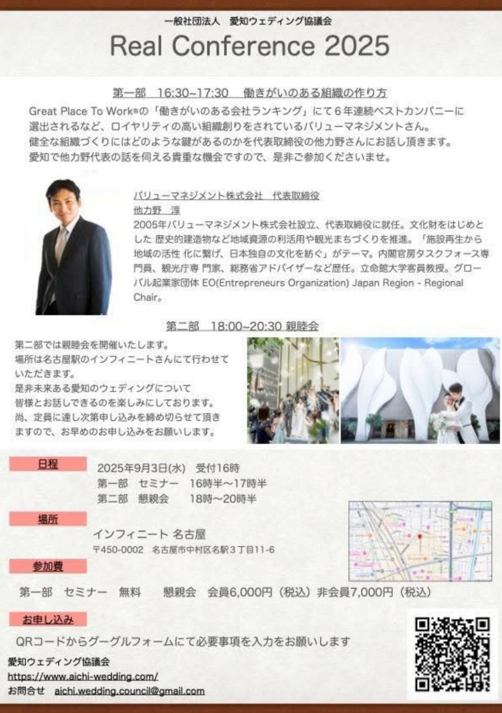

平素より、愛知ウェディング協議会の活動へのご厚誼に、心より感謝申し上げます。

2025年9月のAWCリアルカンファレンスでは、バリューマネジメント株式会社 代表取締役 他力野 淳様をお迎えします。Great Place To Work® の「働きがいのある会社ランキング」にて6年連続ベストカンパニーに選出されるなど、ロイヤリティの高い組織創りをされているバリューマネジメントさん。健全な組織づくりにはどのような鍵があるのかを、他力野様にお話しいただきます。
人手不足が続くいま、良い人材に「来てもらう」ことと同じくらい大切なのが、「長く、いきいきと働き続けてもらう」ことです。スタッフが働きがいを感じられる組織であってこそ、お客様への良いサービスも生まれます。組織づくりは、遠回りのようでいて、実は業界の未来にまっすぐ繋がるテーマです。
経営者・マネジメント層の方はもちろん、日々チームで働くすべての方にとって、ヒントの多い時間になるはずです。愛知で他力野代表の話を伺える貴重な機会ですので、是非ご参加くださいませ。
2005年バリューマネジメント株式会社設立、代表取締役に就任。文化財をはじめとした歴史的建造物など地域資源の利活用や観光まちづくりを推進。「施設再生から地域の活性化に繋げ、日本独自の文化を紡ぐ」がテーマ。内閣官房タスクフォース専門員、観光庁専門家、総務省アドバイザーなど歴任。立命館大学客員教授。グローバル起業家団体 EO（Entrepreneurs Organization）Japan Region - Regional Chair。
第二部では親睦会を開催いたします。場所は名古屋駅のインフィニートさんにて行わせていただきます。是非未来ある愛知のウェディングについて皆様とお話しできるのを楽しみにしております。尚、定員に達し次第申し込みを締め切らせていただきますので、お早めのお申し込みをお願いします。
セミナーは無料です。会員の皆さま、そして非会員の皆さまも、ぜひこの機会にご参加ください。みなさまのご参加、お待ちしております。